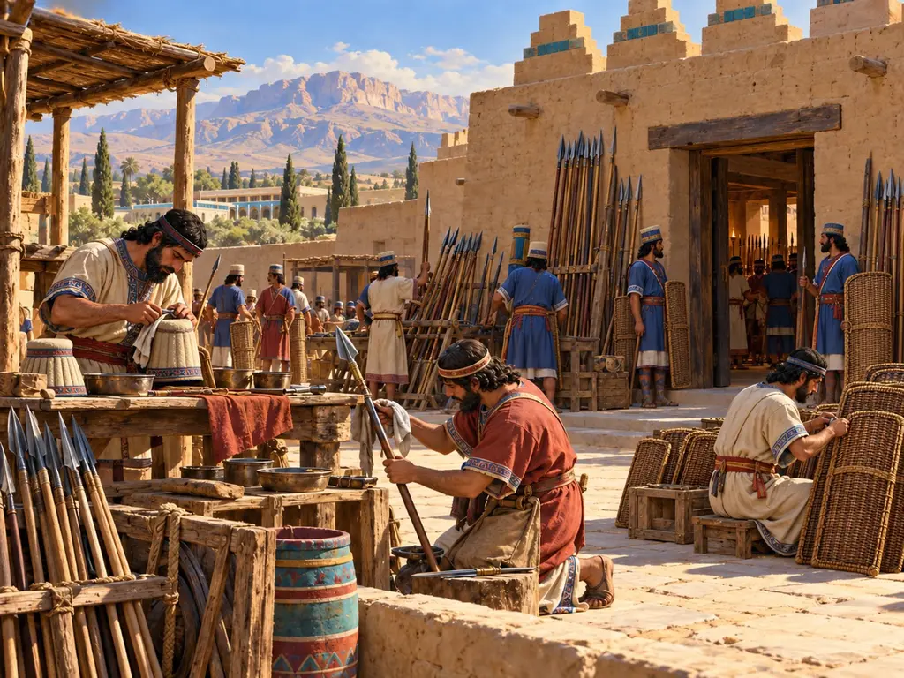
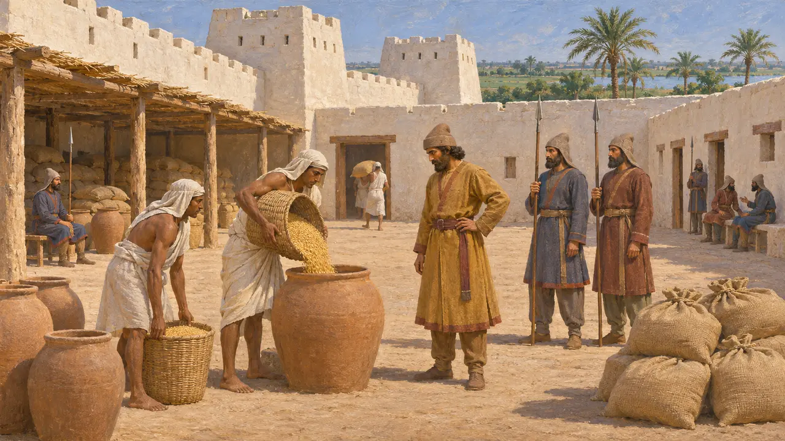
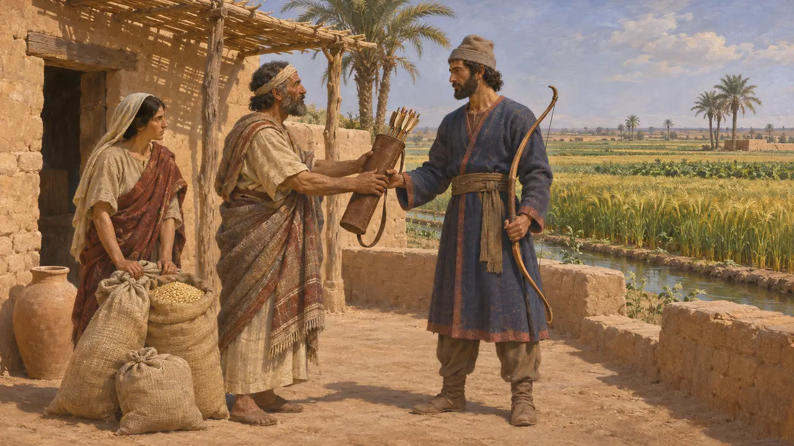
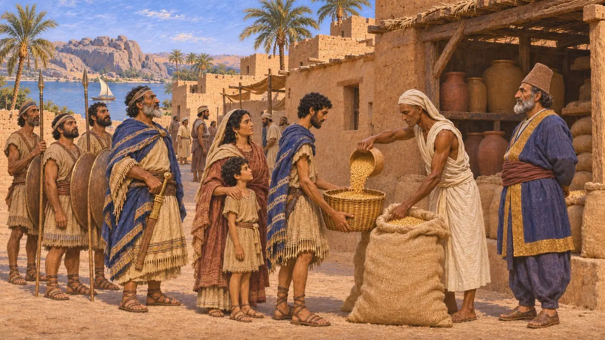
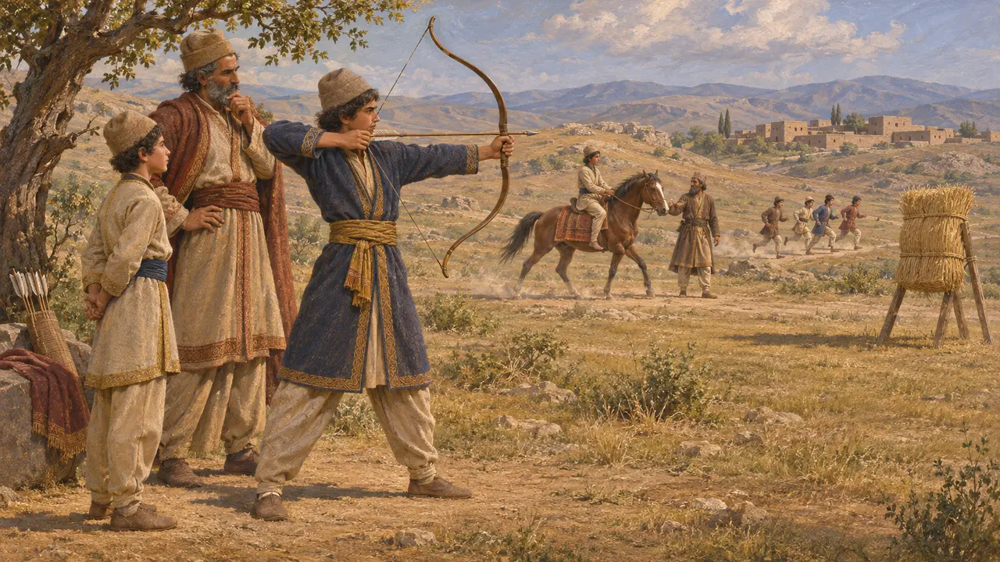
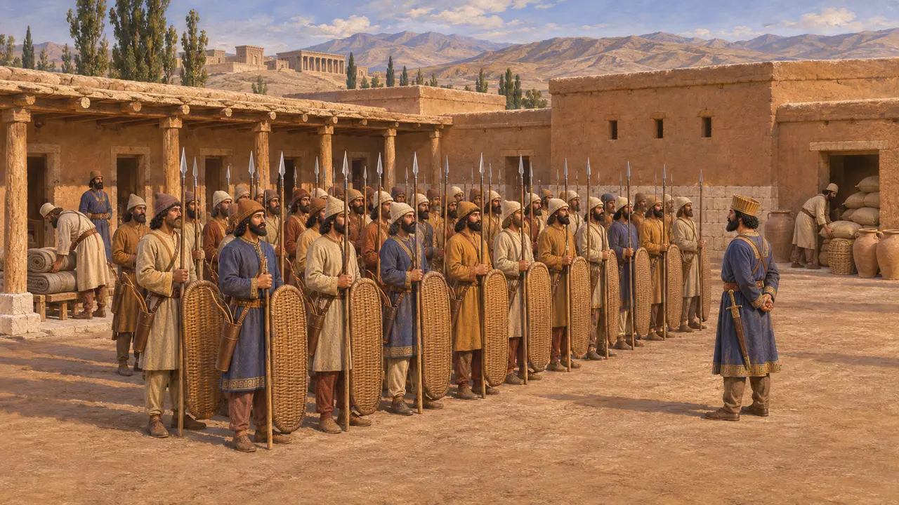

兵营
阿契美尼德帝国士兵的营舍与补给，公元前6至前5世纪
阿契美尼德诸王在帝国各地的要塞和驻防城镇中屯驻士兵，由王室和地方仓储供给粮食。然而，大多数为国王作战的人并不住在兵营里：他们或以服役换取土地，或在下令出征时应召入伍。因此，像游戏中兵营这样的建筑，只是波斯军队驻扎、供给和训练方式中的一小部分。
游戏中： 游戏中的兵营里，教官从各户人家征募并训练长矛兵，由运送兵器和大麦的货车补给。这简化了历史：史料中并无与之完全相同的波斯建筑，大多数士兵持有服役份地，并在少年时期接受训练。

要塞中的驻军
古代记述希罗多德记载，波斯人及其辅助部队驻扎在孟斐斯的白城堡，除白银贡赋之外，还从埃及领取120000斗谷物。他还讲述了公元前498年爱奥尼亚人焚烧萨第斯下城时，阿尔塔弗涅斯如何率重兵据守萨第斯卫城。这样的部队住在设防据点，由行省供养，这是阿契美尼德王朝最接近兵营的存在。
Herodotus 3.91; 5.100

国王土地上的士兵
见于史载巴比伦文献显示，土地以弓地、马地和战车地为单位授予，持有者应召时须提供一名配齐装备的士兵。这一制度在大流士在位初期已经施行。后来的穆拉树档案显示，此类地产被编为称作“哈特鲁”的单位，有时以缴纳白银代替服役。士兵出自家户与土地，而非出自兵营。
M. Stolper, Entrepreneurs and Empire, 1985

象岛的驻军
见于史载出土于埃及南部边境象岛的阿拉米语纸草，记录了一支由犹太人和阿拉米人组成的戍军，分队编制，各有指挥官统领。他们携家眷住在镇上，拥有房屋，并从王室仓库领取口粮。这些纸草大多写于5世纪后期，晚于本游戏所涉时期，但展示了一支边境戍军的日常运作。
B. Porten, Archives from Elephantine, 1968

波斯少年如何习武
古代记述希罗多德记载，波斯男孩从五岁到二十岁要学三件事：骑马、射箭和说真话。数百年后的斯特拉波则描述了成群的少年在年长者带领下接受吃苦、奔跑和射箭的训练。两者都把训练描述为成长的一部分，而非兵营里的操练。
Herodotus 1.136; Strabo 15.3.18

常备军还是征召兵
争夺中希罗多德记载，不死军是10000名精选的波斯步兵，始终保持满员；许多史学家也承认存在一支常备王家军队的核心。然而这一核心的规模和职业化程度如何，以及每次出征的大军中有多少是临时召集的征召兵，至今仍有争论。希罗多德所记薛西斯全军的总数，普遍被认为严重夸大。
Herodotus 7.83; P. Briant, From Cyrus to Alexander, 2002
来源
- Herodotus, Histories 1.136, 3.91, 5.100, 7.83
- P. Briant, From Cyrus to Alexander, 2002
- M. Stolper, Entrepreneurs and Empire, 1985
- B. Porten, Archives from Elephantine, 1968
- Strabo, Geography 15.3.18